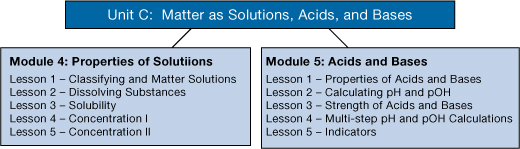

In this module you will explore the relationship between empirical properties and theoretical ideas, with an emphasis on qualitative and quantitative analysis.
The essential questions that you will look at in this module are
In this module you will learn the answers to these questions and explore several aspects of acid-base chemistry.
In Lesson 2, there are theories, like the Arrhenius’s theory, that attempt to explain and predict the behaviour of acidic and basic substances when they are dissolved in an aqueous solution. However, you may have found situations where this theory was not adequate when explaining and predicting your observations of the behaviour of an acid or base. In this module you will learn why and in what way Arrhenius's theory had to be modified to overcome these limitations.
The essential questions that you will look at in this module are